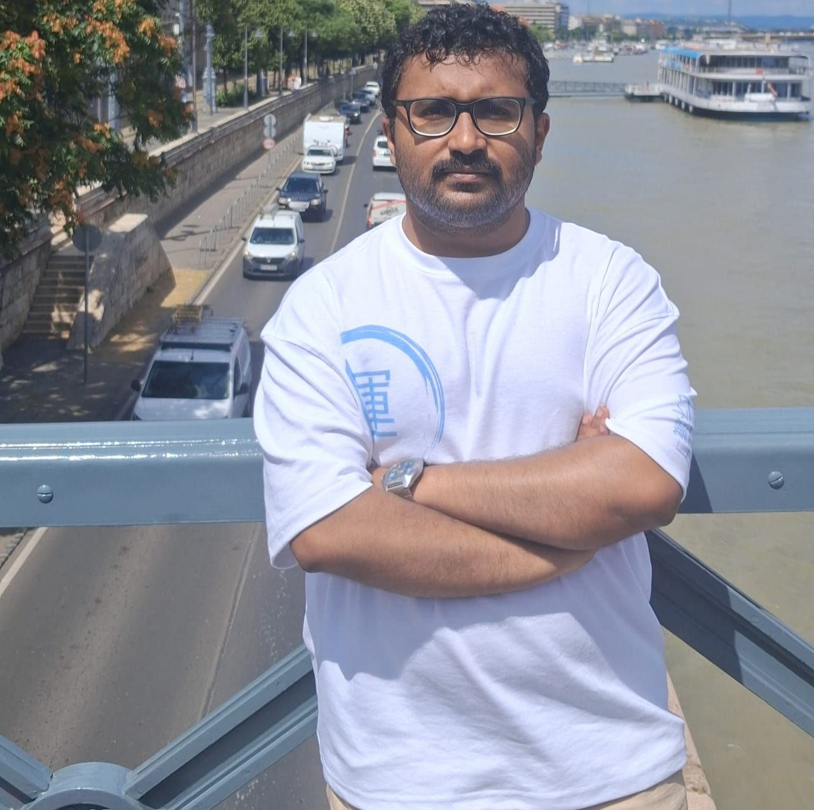

Sharath Naganna Honnavalli (Sharath H N)
MS (Research), Computer Science & Engineering · IIT Bombay
Natural Language Processing · Figurative Language · Vision-Language Models
About
I am a Master’s (Research) student in Computer Science and Engineering at the Indian Institute of Technology Bombay. My research interests are centered on natural language processing and computational linguistics, with a focus on non-literal and pragmatic language phenomena.
Previously, I worked as a Software Engineer at Cisco, where I developed backend systems primarily in Go.
Outside academia, I am a long-time One Piece fan, patiently waiting for Eiichiro Oda to complete the manga.
Research
My research focuses on modeling and analyzing non-literal language phenomena in natural language processing. I study how figurative meaning, such as humor, sarcasm, and humblebragging, is expressed in text and how neural language models interpret and generate such content.
A central direction of my work is the steering and control of figurative language in neural models. I investigate prompt-based and inference-time interventions for influencing figurative behavior, and use mechanistic interpretability tools to analyze and characterize model responses across different figurative contexts.
I also work on multimodal retrieval-augmented generation for document understanding, focusing on systems that retrieve and reason over both textual and visual information, with an emphasis on robustness to complex layouts and real-world document structure.
As a potential research direction, I am interested in exploring the intersection of mechanistic interpretability and abstract, high-level language concepts that are difficult to formalize, such as cultural context and socially grounded meaning. I aim to investigate whether interpretability tools can help characterize how such concepts influence model behavior, without assuming explicit symbolic representations.
News
- March 2026 Paper accepted at VisionDocs Workshop (WACV 2026).
- Aug 2025 Paper accepted at ACL 2025 (Findings).
- May 2025 Working as an Applied ML Intern at Hyperbots Inc.
- July 2024 Started MS (Research) at the Indian Institute of Technology Bombay, advised by Prof. Pushpak Bhattacharyya.
- Aug 2022 Joined Cisco as a Software Engineer.
Publications
Contact
Email: sharathhn@cse.iitb.ac.in
Mumbai, India